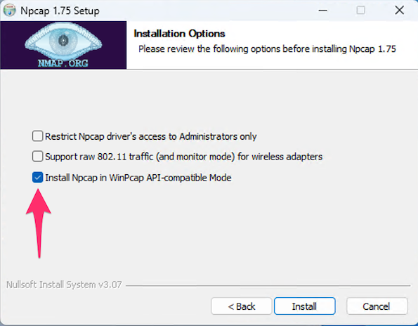
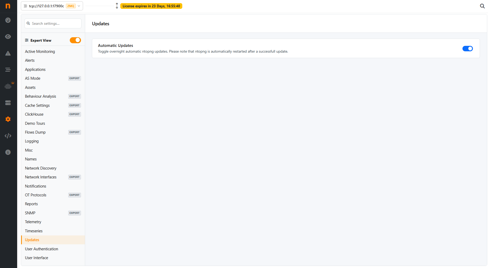

Установка
ntopng имеет открытый исходный код и доступен на GitHub. Кроме того, предварительно скомпилированные двоичные файлы Пакеты ntopng доступны как для Linux, так и для Windows. Установка инструкции для бинарных пакетов доступны ниже.
Установка в Linux
Инструкции по установке можно найти на сайте http://packages.ntop.org/. Разработка и стабильные сборки доступен. Стабильные сборки предназначены для производственных сред, тогда как сборки для разработки предназначены для тестирования или раннего доступа к функциям.
По умолчанию только что установленные пакеты отключают простой веб-интерфейс HTTP и включают HTTPS. на порту 3001 (т. е. ntopng доступен по адресу https://<хост>:3001), используя самозаверяющий сертификат. Видеть SSL/HTTPS для получения подробной информации о замене его собственным сертификатом.
Установка на macOS
Упаковка
macOS установочные пакеты можно найти по адресу http://packages.ntop.org/ и устанавливаются с GUI.
Примечание
macOS установочный пакет не подписан, поэтому перед его установкой вам необходимо:
найдите пакет ntopng (обычно в каталоге «Загрузки»). Предположим, его имя — ntopng-6.X.YYYY-macos-arm64.pkg.
xattr -d com.apple.quarantine ntopng-6.X.YYYY-macos-arm64.pkg
дважды щелкните значок установщика
Для запуска ntopng требуется установка Redis, поэтому сначала необходимо установить его с помощью Домашнее пиво, как указано ниже в этом разделе.
После установки ntopng запускается и активен на локальном HTTPS порту 3001 (т.е. ntopng доступен в https://127.0.0.1:3001), в то время как обычный порт HTTP отключен по умолчанию.
Если вы хотите удалить ntopng, вы можете открыть терминал и ввести sudo /usr/local/bin/ntopng-uninstall.sh
Чтобы включить геолокацию, пакеты macOS требуют, чтобы файлы базы данных были вручную помещены в папку /usr/local/share/ntopng/httpdocs/geoip. Подробные инструкции о том, как получить файлы базы данных и установить их, доступны по адресу https://github.com/ntop/ntopng/blob/dev/doc/README.geolocation.md/. После того, как файлы были загружены и помещены в папку, необходимо перезапустить ntopng, чтобы прочитать и загрузить их.
Файл конфигурации ntopng установлен в /usr/local/etc/ntopng/ntopng.conf, который можно редактировать. (как привилегированный пользователь) с помощью текстового редактора.
Службу ntopng можно запустить/остановить с помощью команды launchctl:
[Начинать]
sudo launchctl load /Library/LaunchDaemons/org.ntop.ntopng.plist[Останавливаться]
sudo launchctl unload /Library/LaunchDaemons/org.ntop.ntopng.plist
Домашнее пиво
Установить
brew install redisНачало redis
brew services start redisНачало ntopng
sudo ntopng
Установка на Windows
Для Windows доступен только двоичный файл сборки для разработки. Двоичный файл может быть загружен с Windows репозиторий пакетов.
Загрузите ntopng zip файл по ссылке выше, найдите его в
файловую систему и разархивируйте ее, чтобы получить доступ к фактическому ntopng
установщик. Дважды щелкните установщик. Процедура установки
запустится и ntopng будет установлен вместе со своими зависимостями.
Процедура установки устанавливает
ntopng
Примечание
При обновлении более ранней версии ntopng до Windows это безопасно пропустить установку любой зависимости ntopng. Это безопасно ответить «Нет» или нажать «Отмена» при появлении запроса на установку Redis.
Установщик ntopng поставляется без драйверов захвата. Вам нужно установить вручную драйверы npcap ДО вы устанавливаете ntopng. Если Wireshark уже установлен на Windows, затем драйверы npcap уже установлены и установка драйверов не требуется.

Во время установки npcap вам необходимо выбрать «Установить Npcap в режиме совместимости с WinPcap API».
Если вы видите сообщение, подобное приведенному ниже

это означает, что ваши драйверы захвата не были установлены должным образом и вам необходимо установить их, как описано в этом разделе.
Установка на FreeBSD
Инструкции по установке можно найти на сайте http://packages.ntop.org/.
Установка на OPNsense/pfSense
OPNsense инструкции по установке доступны в OPNsense страница интеграции. pfSense инструкции по установке доступны в pfSense страница интеграции.
Примечание
В некоторых версиях пакет redis поставляется с конфигурацией по умолчанию, которая неоптимальна для OPNsense/pfSense. Пожалуйста, отредактируйте /usr/local/etc/redis.conf и проверьте строку каталог /var/db/redis/ который указывает, где redis перемещает базу данных. Такая база данных должна находиться в постоянном хранилище (т. е. на диске), а не на виртуальном диске, как, например, на pfSense. В этом случае вы можете решить проблему, установив для него значение каталог /var/db/pkg/ntopng/ или в любой другой подходящий каталог, который находится в постоянном хранилище, а не на виртуальном диске.
Предупреждение
Помните, что устройства OPNsense/pfSense часто имеют ограниченные ресурсы. Если вам нужно контролировать большую сеть, мы предлагаем вам рассмотреть возможность запуска nProbe (который имеет ограниченное использование ресурсов и не требует дискового пространства для хранения исторических данных) на OPNsense/pfSense, который экспортирует поток в сторону ntopng, работающего на хосте в локальной сети, который имеет больше доступных ресурсов.
Установка в контейнер
Чтобы установить ntopng (инструменты ntop в целом) в контейнер, пошаговое руководство можно найти здесь: Использование инструментов ntop на Docker.
Изображения Docker инструментов ntop можно найти в Docker Хаб.
Здесь вместо этого другое руководство по передовому опыту использования инструментов ntop в контейнерах.
Обновление программного обеспечения в Linux
Общие инструкции по обновлению программного обеспечения можно найти по адресу http://packages.ntop.org/ вместе с инструкцией по установке. В зависимости от операционной системы.
Также можно проверить наличие обновлений программного обеспечения через веб-интерфейс с помощью верхнего правого меню, как показано на рисунке ниже. Система автоматически проверяет наличие новых обновлений в ночное время и сообщает о них. новая версия, если есть. В противном случае также возможно принудительно проверить новые версии, нажав на Проверьте наличие обновлений и ждем несколько секунд (до 1 минуты) для выполнения проверки.
Альтернативно можно проверить наличие обновлений из командной строки (инструкции по обновлению программного обеспечения через командную строку можно найти также в http://packages.ntop.org/)

Меню проверки обновлений
В том же меню, когда доступна новая версия ntopng, можно чтобы установить его, нажав на Установить обновление, как показано ниже.
Также можно настроить ntopng на автоматическое обновление в ночное время, это можно включить через Настройки > Предпочтения > Обновления. Автор по умолчанию ntopng не обновляется в одночасье, так как требует перезапуска услугу, но если хотите, вы можете включить эту настройку и позволить ntopng делать все автоматически.

Настройка автоматического обновления